TEEGARTEN
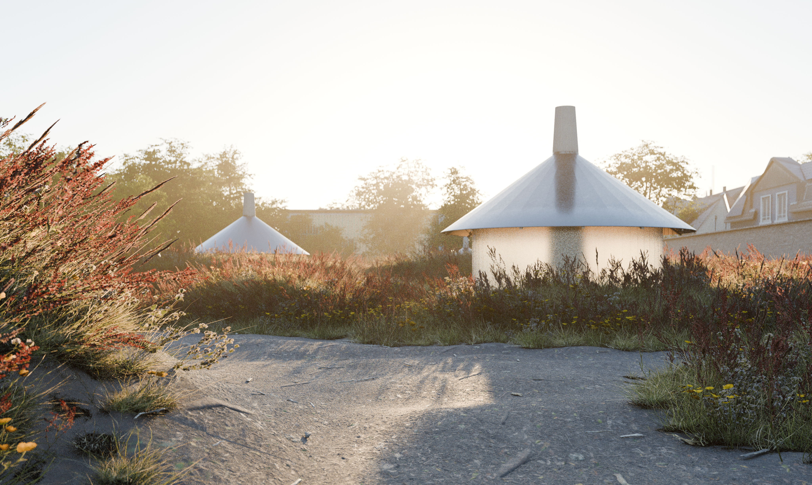
In the heart of the Orangery in Darmstadt, a previously overlooked corner of the garden is being transformed into a place of tranquillity and retreat. The tea garden does not stand as a single building within the existing landscape, but is spread out as a loose sequence of small, round tea houses amongst tall grasses and wild vegetation.
Each tea house is defined by a central supporting column. From this, the roof hangs like an umbrella over the space below. A surrounding wall of opaque cast elements frames the interior and filters the surroundings into a diffuse play of light and landscape. A fireplace is integrated into the centre of the column, where tea is prepared directly within the space.
The interior is designed to accommodate just a few people. The circular geometry breaks up the room’s clear alignment and creates a focused, intimate atmosphere. Everyone’s gaze is directed towards the centre of the house and the immediate view of the surrounding vegetation.
Architecture and landscape merge seamlessly. The tea houses are positioned in the garden in such a way that their structures almost disappear amongst the plants. From a distance, it is above all the striking roof that stands out against the foliage. The path through the tea garden thus becomes a sequence of approaching, lingering and moving on – from the sheltered interior back out into the landscape.
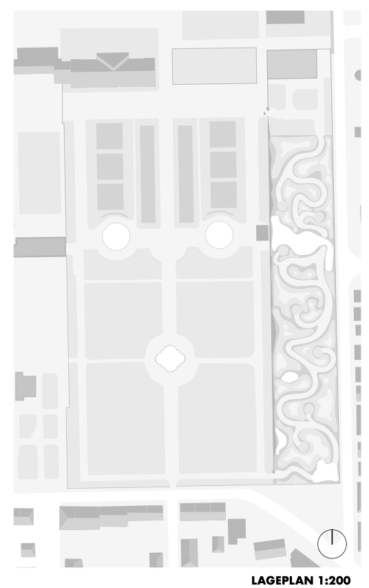
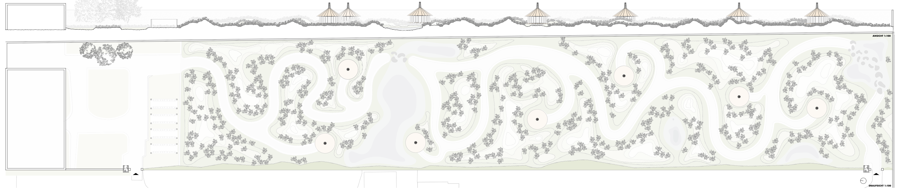
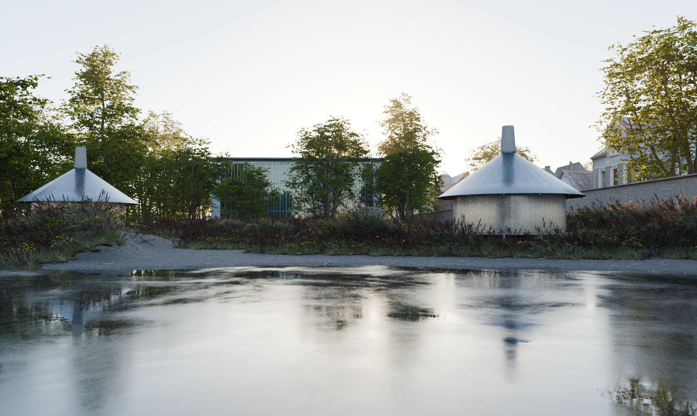
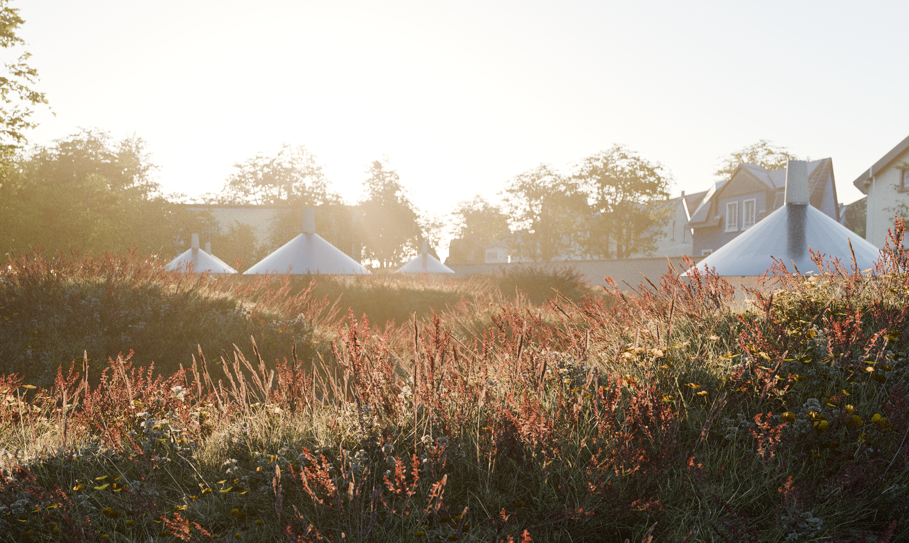
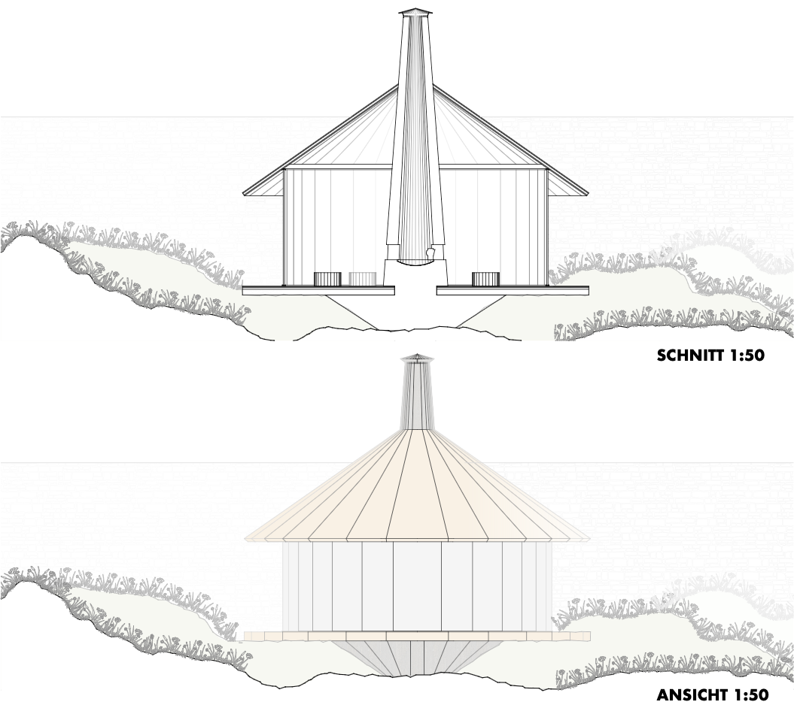
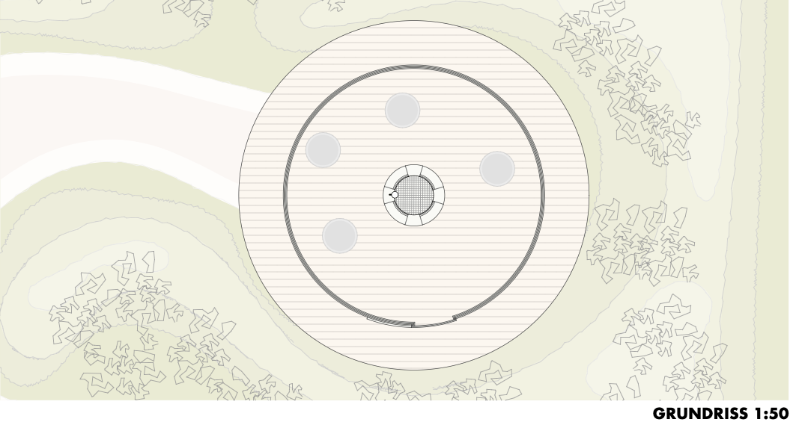
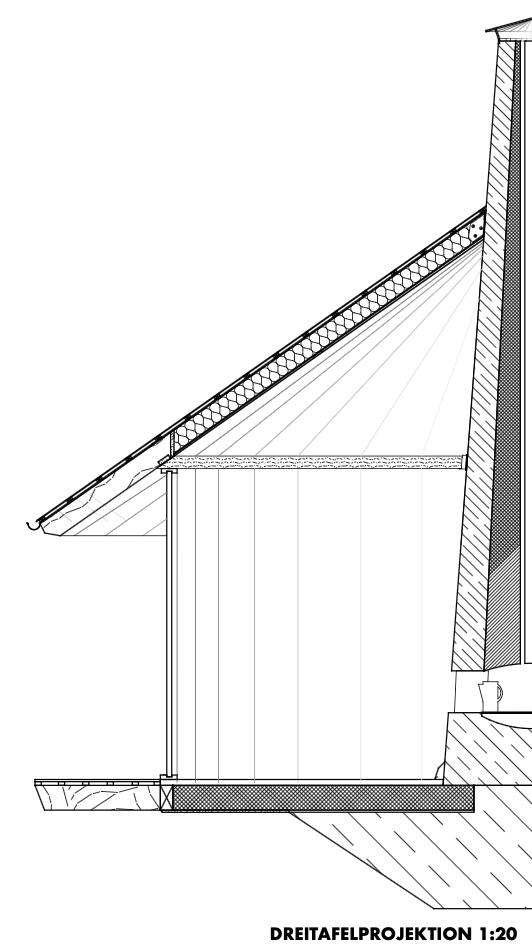
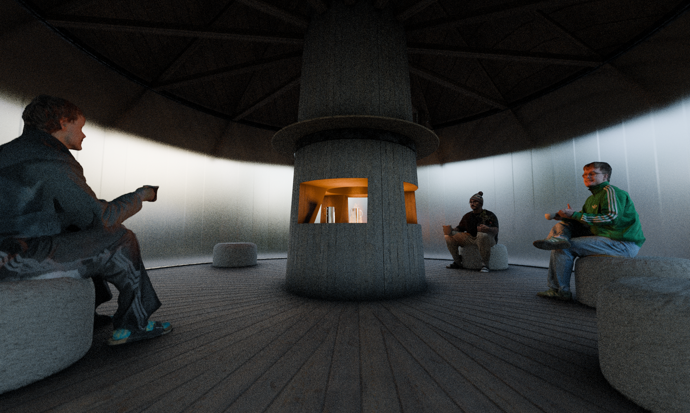
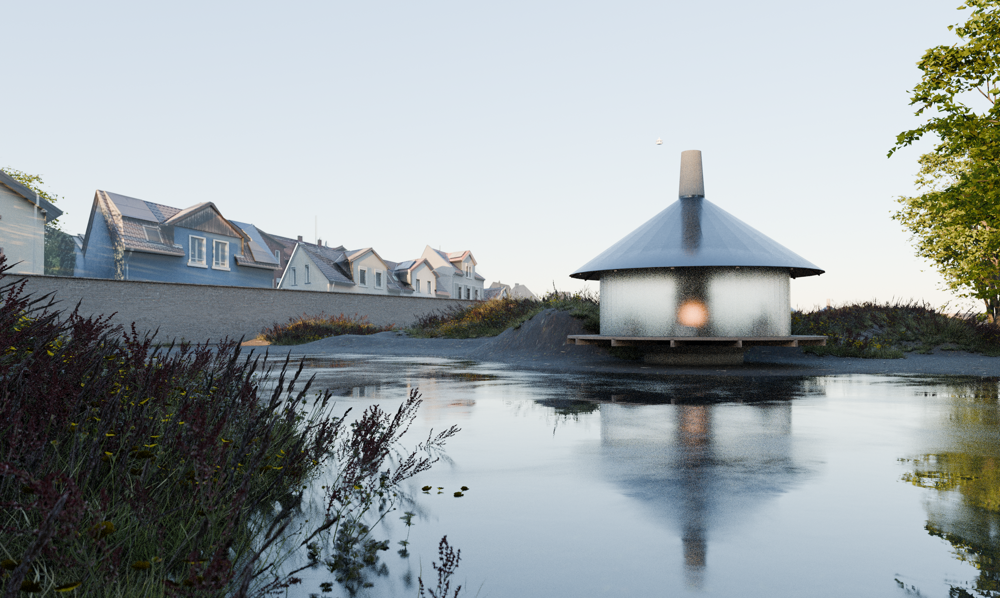
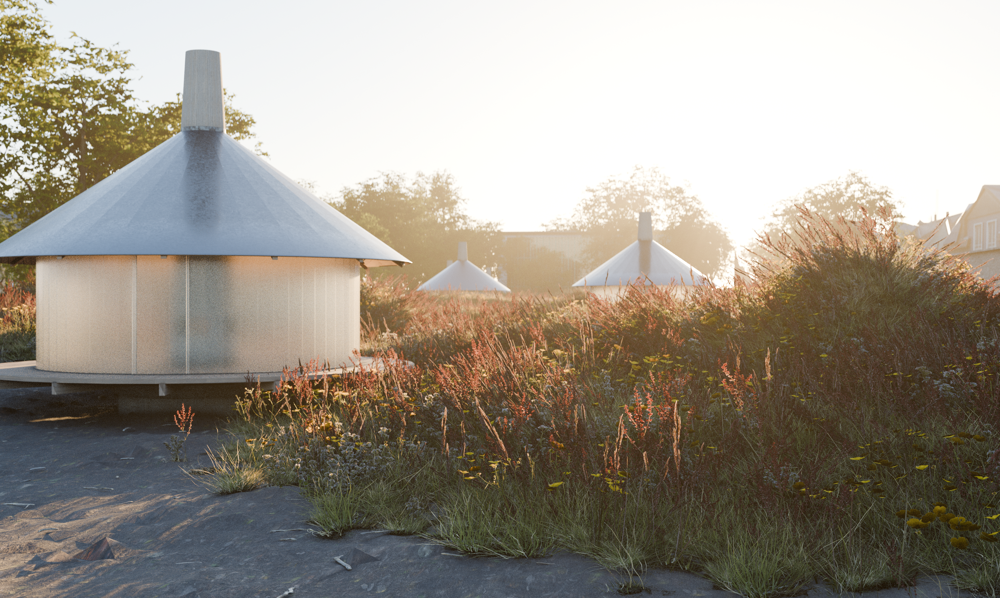
RELATED PROJECTS
4. Semester
STADTGARTEN
Details
STADTGARTEN
Details

6. Semester
VERNÄHT
Details
VERNÄHT
Details